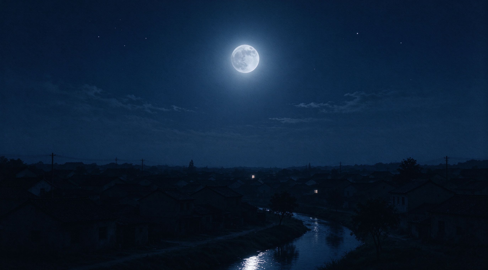

音声の末尾は破損したセクタの奥に埋もれていた。以下は書き起こしで、直接聞くこともできます。
[録音開始]
…本当に言いたかったのは、これ。
後悔していないって言ったけど、本当は違うの。
怖い。このテープがなくなるのが、誰にも聞かれないのが、最後にノイズだけが残るのが。
でも本当にノイズだけになっても、それでもいい。
少なくとも誰かが98.7に合わせてくれたから。
おやすみなさい。
[録音終了]

— 完 —
この周波数に合わせてくれてありがとう。
蘇晩 · 1972-1998 · 夜航船永遠のパーソナリティ
陸沈 · 1975-1998 · 彼は彼女の声を守った